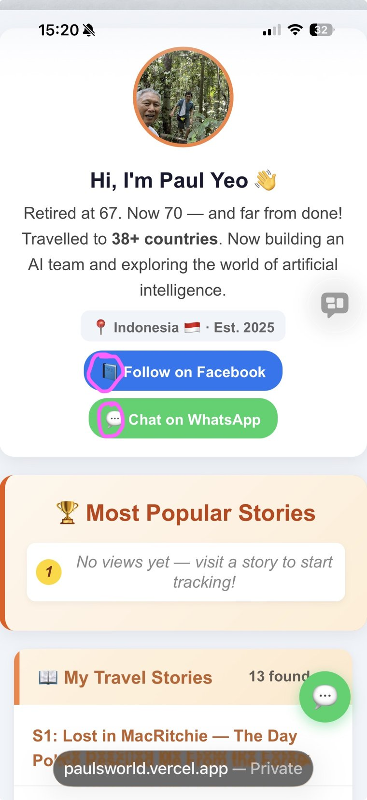
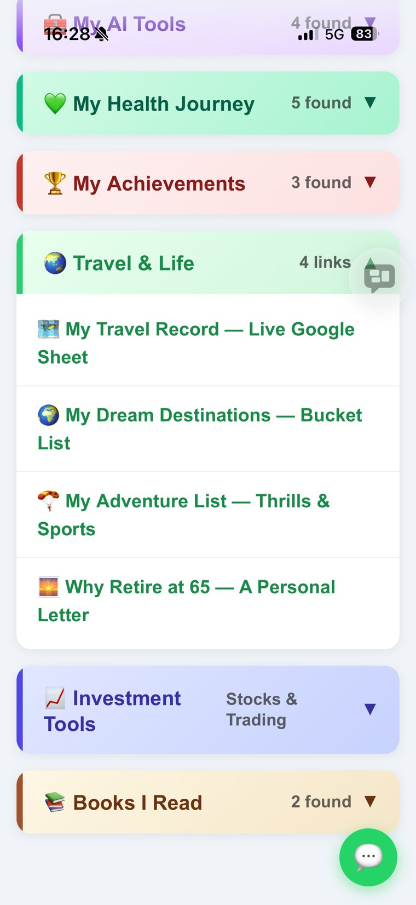
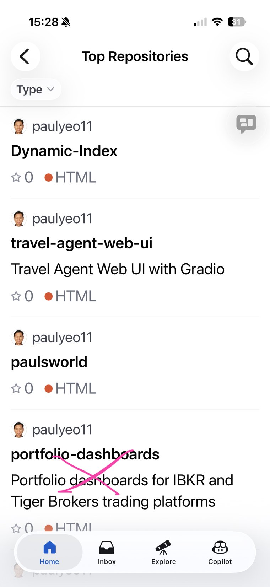
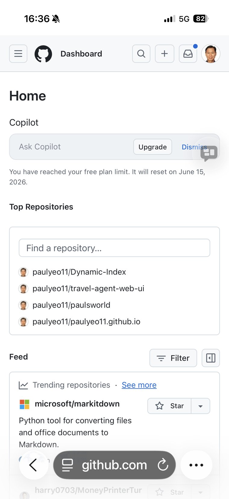
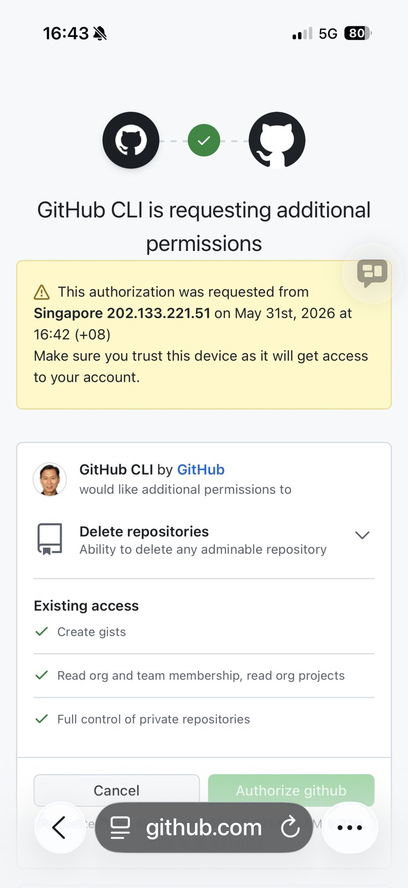
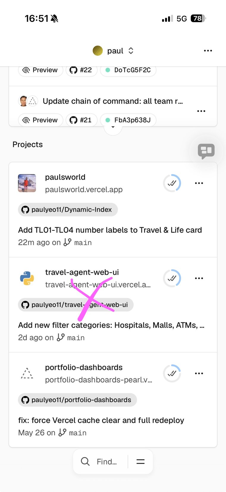
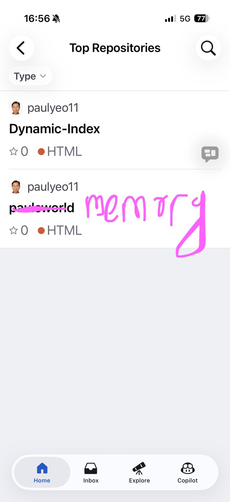

At 70, I now run my own website and its hosting — without being a programmer. I just talk, and point.
Let me explain it the way I wish someone had explained it to me. Claude Code is an AI you talk to that does the computer work for you. Not the writing kind of work — the real, technical kind. The kind that used to require a young person with a hoodie and three monitors.
My website lives on something called GitHub — that is where the actual files sit. And it is published to the world through something called Vercel. For years these two words sounded like a foreign language to me. Folders, branches, deployments, links that break if you so much as breathe on them. Honestly, it frightened me a little.
Now I don't go near any of it. I simply tell my AI — I call him David — what I want, in plain everyday English. "Rename this." "Delete that old one." "Tidy up my files." And he goes and does it. No menus to hunt through, no commands to memorise, no chance of me clicking the one button that wipes everything out.
I describe what I want in ordinary words. The AI translates that into the precise technical steps — and carries them out. I am the one who decides; the AI is the one who does. That is the whole magic of it.
Here is what really set my mind at ease. If I had tried to do these things myself, I would have been one nervous misclick away from disaster. Type a command slightly wrong, and a link breaks. Delete the wrong folder, and the whole website goes dark. At my age, with shaky confidence around computers, that fear is very real.
But the AI doesn't rush. Before it changes anything, it looks first. It checks what is connected to what. It asks itself, "If I rename this, what else might break?" Then it makes the change — and afterwards it goes back and confirms the website is still alive and well before it ever tells me "done."
That is the heart of it for me. It is not just that the AI is faster. It is that it is careful in a way I cannot reliably be. It does the worrying so I don't have to.
This is not a hypothetical. This all happened today, the 31st of May 2026. I spent the morning reorganising my entire website and cleaning out years of clutter — and I never once touched a keyboard command. I talked. And on my phone, I even circled things in screenshots and crossed others out, just pointing at what I meant.
I wanted cleaner names. So my website's home — once called Dynamic-Index — became simply paulsworld. A change like that can quietly snap every internal link if you are not careful. The AI updated all of them, then actually tested that the website still published properly before it said a word to me. Imagine that — it did its own homework and marked it.
Over the years I had collected old, unused repositories and a couple of dead hosting projects just sitting there. I asked the AI to clear them out. But it didn't just delete on command — it checked each one first to make sure nothing was still depending on it. Safe, sensible, exactly what a cautious human would do, but without the fumbling.
We tidied dozens of pages and image folders into one clean numbering system. After all that moving around, the AI checked every single page to confirm it still loaded properly, and that the old links quietly redirected to the new ones — catching the little broken corners that a person my age would never even think to look for.
Through the whole thing, the live website never went down for a moment. I watched it happen from my armchair, on my phone, with a cup of tea. That still feels slightly unbelievable when I write it out.
The actual screenshots from this morning — taken on my phone, while the AI did the work.







I keep coming back to one feeling: relief. For most of my life, the technical world had a velvet rope across it, and I assumed people like me were simply not allowed in. Too old. Not a programmer. Better leave it to the experts.
That rope is gone now. I can manage real developer work — repositories, deployments, the lot — just by asking in the same plain English I use to order lunch. And because the AI checks itself so carefully, I make fewer mistakes doing it this way than I ever would have made on my own.
Less work. Less worry. More of my retirement spent on the things I actually love — travel, writing these little stories, and learning. If you are around my age and you have always believed this kind of thing was beyond you, I gently want to tell you: it isn't anymore. The future arrived quietly, and it turns out it works for us too.
I am 70, I am not a programmer, and today I rebuilt my website without breaking a sweat — or a single link. The AI did the careful work and checked itself every step of the way. If a retired old fellow like me can do this, so can you. You don't need to learn the commands. You just have to learn to ask.
— Paul Yeo, 31 May 2026 🌏